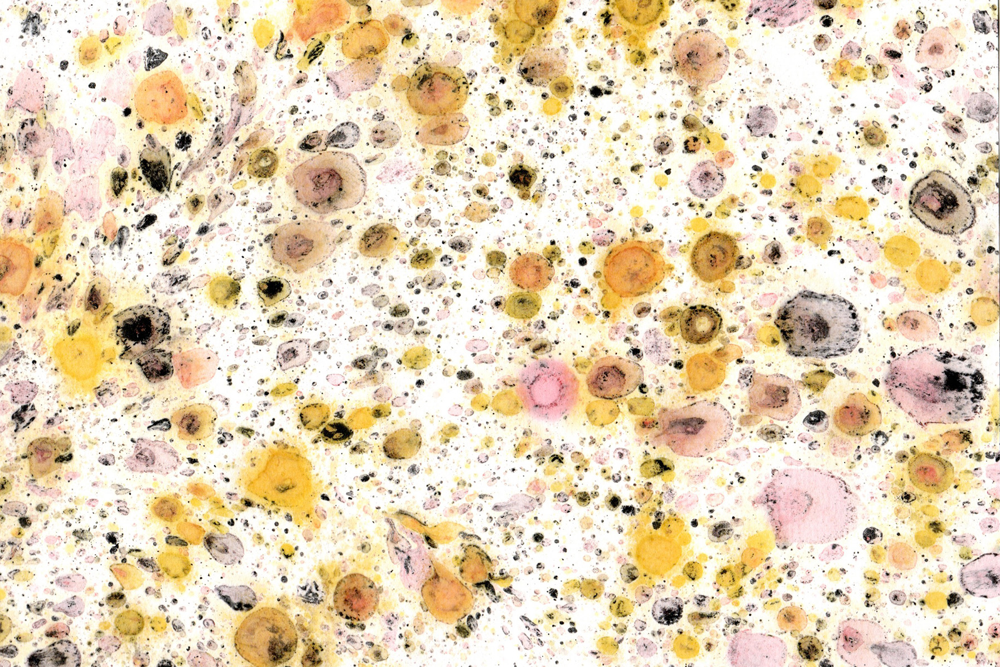

Oily Palms
Art-research and printmaking
This series of artistic experiments was a collaboration with anthropologist Alice Rudge and sociologist Véra Ehrenstein as part of their research into the colonial histories of palm oil and the rapid development of oleaginous substitutes. Engaging critically with specimens and documents related to the colonial plantations of oil palms in the early 1900s, I was inspired to develop a process of marbling with palm oil, suspending the oil (luminous yellow) and inks (black and red) in water, then laying sheets of paper on the surface of the mixture.
This research was initially supported by the Dean's Strategic Fund at UCL in 2021. One of the prints featured as a cover image for a special issue on 'substitution' published in Fieldsights by the Society for Cultural Anthropology (see culanth.org, November 2024). We also documented the art-research in a 12-page zine.
Usually palm oil is blended and hidden within another form. Now, it is tangible.
Read an excerpt from .
Wednesday September 9, 2021. I unscrewed the bottle top and raised the opening to my nose. How to describe that faint smell? Is it earthy? Woodsy? Maybe I could extract and concentrate the fragrance somehow. I'm surprised the oil even smells at all, given that one of its commercially desirable qualities is its tastelessness... I pour a little oil into a glass jar. A drop or two gets on my fingers, tinting my skin yellow until I rub it in, and the oil disappears. The colour is remarkable: a deep rusty red with golden legs. Yellow ochre coats the insides of my glass jar as I tilt it this way and that. There are some fragments of pulp at the bottom of the bottle. I presume this to be the flesh of the fruit... These traces of palm oil are revelations. Like many others in 'Western' societies, my body has unknowingly contacted and ingested this substance in foods and beauty products at various points throughout my life. Usually palm oil is blended and hidden within another form. Now, it is tangible.
I recently attended a marbling workshop with a local artist, Lisa Ibbetson. She teaches suminagashi, Japanese ink marbling. Lisa explained how the technique is an unique encounter with the surface of water. Rather than completely controlling the process, the marbler is an observer or participant. Wielding brushes, surfactant, needles, vodka, straws, and fans, we played with the fluid dynamics of ink on water and admired the effects... We talked about palm oil during the marbling workshop. We talked about the oily qualities of the inks. Lisa confirmed that you can use oils for marbling. The only downside is that they grease up brushes and water trays. I'm prepared to take that risk. I like the idea that marbling could set in motion the dynamics of palm oil, as a material collaboration. Poignantly, some of our more intricate marbled prints looked like aerial photographs of landscapes devastated by slash and burn.